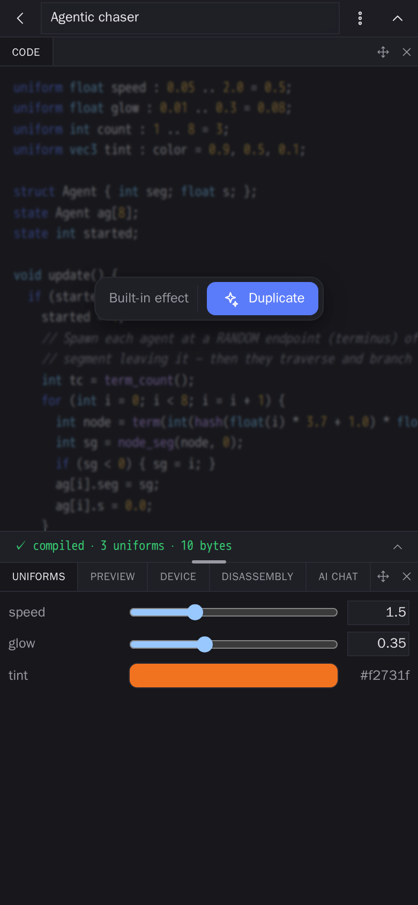
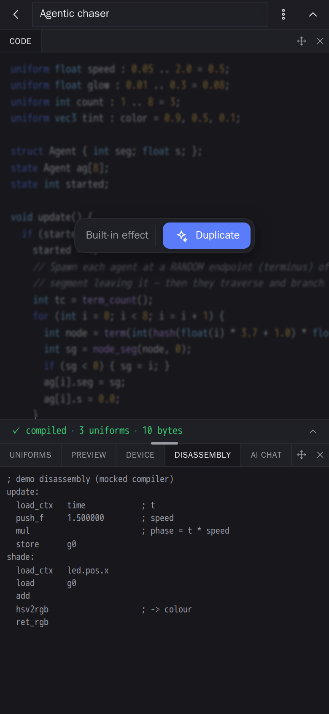
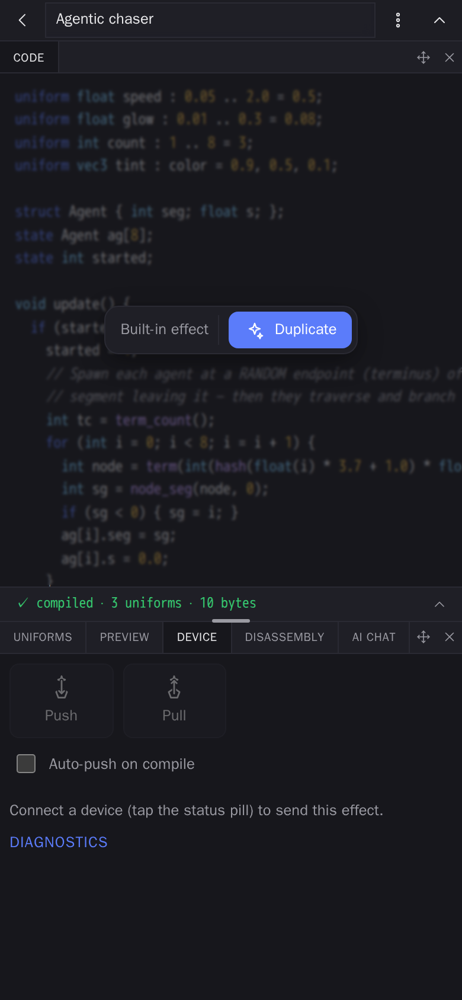

The effect editor
Write, preview, and push shader effects with the exact on-device VM.
The editor is a full-screen workspace for one effect. You write the effect's source, and the app compiles it off-thread and previews it live over a map using the EXACT same virtual machine the firmware runs — so what you see is what the fixture will do. Edits autosave back to the library.
Editor features
- Live preview on a real map with the firmware VM, plus a preview grid.
- Uniforms pane — expose tunable parameters (speed, color, …) and bind them to MIDI controls or the on-screen sliders.
- Compile feedback — errors surface inline as you type.
- Push to device — when a controller is connected, send the compiled
.fxband live uniform values so the fixture updates as you edit. - AI assistant (optional, bring-your-own-key) — describe a change in words and have it drafted for you.


.fxb bytecode as a readable op listing, straight from the Rust disassembler the device uses.